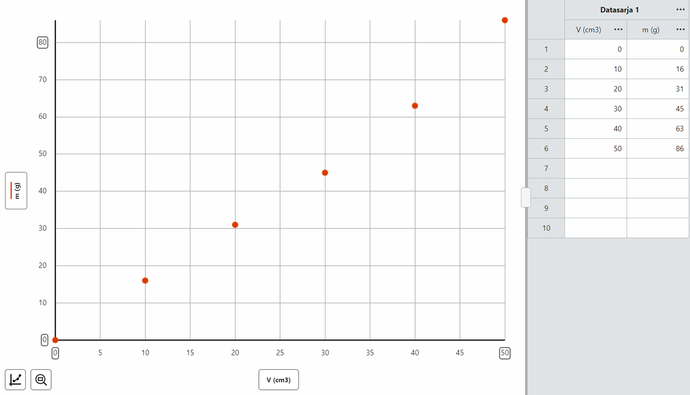

Kuvaaja näyttää yhdellä silmäyksellä, miten kaksi mitattua suuretta riippuvat toisistaan. Hyvästä kuvaajasta näkee, sopivatko mittaukset malliin, ja siitä voi määrittää tutkittavan suureen.
Yleinen taito: ohje sopii mille tahansa ohjelmalle tai laskimelle.
Tässä ohjeessa opit
- piirtämään mittauspisteistä kuvaajan, jossa on akselien suureet ja yksiköt
- valitsemaan kuvaajan akselit ja asteikot perustellusti
- merkitsemään kuvaajaan mittausten epävarmuuden
Mihin tarvitset tätä
Lähes jokaisessa tutkimuksessa tulokset esitetään kuvaajana. Tutkimuksessa Jousivakion määrittäminen piirrät jousivoiman venymän funktiona ja tutkimuksessa Kuuman veden jäähtyminen lämpötilan ajan funktiona. Kuvaaja on myös lähtökohta seuraaville vaiheille: suoran sovittamiselle ja kulmakertoimen tulkinnalle.
Työvaiheet
Ohje on kirjoitettu Graphical Analysis Prolle, mutta samat periaatteet pätevät käsin piirrettyyn kuvaajaan.
-
Valitse akselit. Vaaka-akselille tulee yleensä suure, jonka arvot valitset itse tai joka etenee tasaisesti, kuten aika. Pystyakselille tulee suure, joka määräytyy sen mukaan. Jos tutkimuksen malli kertoo, millä akseleilla kuvaajasta tulee suora, käytä niitä. Tutkimuksessa Putoamiskiihtyvyyden määrittäminen heilurin avulla pystyakselille tulee jaksonajan neliö $T^2$ ja vaaka-akselille heilurin pituus $l$. Napsauta ohjelmassa pystyakselin otsikkoa ja valitse piirrettävä sarake, ja napsauta vaaka-akselin otsikkoa ja valitse vaaka-akselin sarake. Kuvassa akselien otsikot ovat painikkeet V (cm3) vaaka-akselin alla ja m (g) pystyakselin vieressä.

Kuvakaappaus: Graphical Analysis (suomenkielinen käyttöliittymä); esimerkkiarvoja. -
Anna akseleille suureet ja yksiköt. Akselin otsikko tulee sarakkeen nimestä ja yksiköstä, jotka annat sarakkeen nimen vieressä olevan kolmen pisteen painikkeen (•••) valikossa kohdassa Sarakkeen ominaisuudet (Taulukko ja lasketut sarakkeet). Otsikossa on suureen tunnus ja yksikkö, esimerkiksi $l\ (\text{m})$ tai $F\ (\text{N})$. Laskettu suure saa lasketun yksikön: $T^2\ (\text{s}^2)$.
-
Valitse asteikot. Asteikon jaot ovat tasavälisiä: yhtä pitkä väli akselilla tarkoittaa aina yhtä suurta muutosta suureessa. Pisteiden pitää täyttää suurin osa kuvaajasta. Akselien rajat valitset kuvaajan asetuksista (englanninkielisessä versiossa Edit Graph Options). Asteikoksi voit valita automaattisen (Automatic), aina nollan näyttävän (Always Show 0) tai käsin asetetun (Manual), jolloin kirjoitat akselin rajat itse. Näytä nollakohta, kun se on tärkeä, esimerkiksi kun haluat nähdä, kulkeeko suora origon kautta. Jos kaikki lukemat ovat kaukana nollasta, kuten lämpötilat $60\,{}^\circ\text{C}$:n ja $80\,{}^\circ\text{C}$:n välillä, nollasta alkava akseli litistäisi pisteet kapeaksi nauhaksi. Kun haluat taas nähdä kaikki pisteet, käytä kuvaajan vasemman alakulman suurennuslasin kuvaketta (englanninkielisessä versiossa Zoom to all Data).
-
Näytä mittauspisteet, älä murtoviivaa. Jokainen mittaus on yksi piste. Valitse kuvaajan asetuksista näyttötavaksi pelkät pisteet (englanninkielisessä versiossa Points), jolloin pisteitä ei yhdistetä. Murtoviiva seuraisi myös mittausten satunnaisia virheitä, eikä se ole malli. Anturin tiheässä aikasarjassa, kuten jäähtymiskäyrässä, ohjelma käyttää yleensä viivaa (Lines), ja se sopii, kun lukemia on satoja. Näyttötapa Both näyttää sekä pisteet että viivan.
-
Merkitse epävarmuus. Jos tiedät mittauksen epävarmuuden, näytä jokaisen pisteen kohdalla epävarmuusjana. Pystysuora jana ulottuu arvosta $y - \Delta y$ arvoon $y + \Delta y$, ja vaakasuoran janan saat samalla tavalla epävarmuudesta $\Delta x$. Janat näyttävät, kuinka tarkasti pisteen paikka tiedetään, ja niitä tarvitaan, kun arvioit kulmakertoimen epävarmuutta. Graphical Analysisissa epävarmuusjanoja kutsutaan virhepalkeiksi. Ne otetaan käyttöön sarakkeen valikon kohdassa Sarakkeen ominaisuudet valintaruudulla Näytä virhepalkit. Asetus on sarakekohtainen: tee se sille suureelle, jonka epävarmuuden haluat näyttää.
Vertaa kuvan kahta kuvaajaa. Ylemmästä ei näe, mitä akseleilla on, pisteet on yhdistetty murtoviivalla, ja pystyakselin asteikko on niin suuri, että pisteet ovat litistyneet alareunaan. Alemmassa on suureet ja yksiköt, pisteiden täyttämät asteikot ja epävarmuusjanat.
-
Tee yksi kuvaaja kutakin kysymystä kohti. Jokainen tutkittava riippuvuus saa oman kuvaajansa. Jos vertaat kahta mittaussarjaa, esimerkiksi kahta eri jousta, voit näyttää ne samassa kuvaajassa, kun akseleilla on samat suureet. Anna sarjoille eri merkit pystyakselin otsikon kautta avautuvassa näkymässä (englanninkielisessä versiossa Plot Manager, kohta Point Symbols). Lisää selite kytkimellä Kuvaajan selite; se on kuvaajatyökalujen valikko, joka avautuu kuvaajan vasemman alakulman kuvakkeesta.
-
Anna otsikko ja vie kuvaaja. Kirjoita kuvaajalle otsikko kuvaajan asetuksissa ja vie kuvaaja kuvatiedostoksi ohjelman vientitoiminnolla (englanninkielisessä versiossa Export graph as png). Numeroi kuvaaja työselostuksessa ja kirjoita sen alle kuvateksti, esimerkiksi "Kuva 1. Heilurin jaksonajan neliö pituuden funktiona." Lisää neuvoja on ohjeessa Kuvaajat ja tulokset työselostukseen.
Tavallisimmat virheet
- Akseleilta puuttuu suure tai yksikkö. Huomaat sen, kun et pysty sanomaan, mitä akselin luku $2$ tarkoittaa. Anna sarakkeille nimet ja yksiköt kohdassa Sarakkeen ominaisuudet.
- Pisteet on yhdistetty murtoviivalla. Kuvaaja näyttää sahalaidalta, vaikka riippuvuus on tasainen. Valitse näyttötavaksi pelkät pisteet ja sovita pisteisiin malli.
- Akselilla on väärä sarake. Kuvaajan muoto on odottamaton, tai pystyakselilla on esimerkiksi $T$, vaikka piti olla $T^2$. Napsauta akselin otsikkoa ja valitse oikea sarake.
- Akselit ovat mallin kannalta väärin päin. Kulmakerroin ei silloin ole etsimäsi suure vaan esimerkiksi sen käänteisluku. Tarkista mallista, kumpi suure kuuluu pystyakselille.
- Asteikko on liian suuri tai liian pieni. Pisteet ovat pienessä kasassa tai osa niistä jää kuvaajan ulkopuolelle. Näytä kaikki pisteet suurennuslasin kuvakkeesta tai muuta akselien rajoja.
Tarkista ennen kuin jatkat
- Kummallakin akselilla on suureen tunnus ja yksikkö.
- Pisteet täyttävät suurimman osan kuvaajasta, eikä niitä ole yhdistetty murtoviivalla.
- Epävarmuusjanat on näytetty, jos epävarmuus tunnetaan.
- Kuvaajalla on otsikko, ja työselostuksessa sillä on numero ja kuvateksti.
Tarvitset tätä tutkimuksissa: Hissin kulkema matka kiihtyvyydestä, Umpinaisen sylinterin hitausmomentti, Hiuksen paksuuden määrittäminen, Hypyn tutkiminen voimalevyllä, Sähkömagneettisen induktion tutkiminen, Jousivakion määrittäminen, Lämmön johtuminen lämpökameralla, Liikemäärän säilyminen törmäyksissä, Liukukitkakertoimen määrittäminen, Valonnopeuden määrittäminen mikroaaltouunilla, Pallon muotokertoimen määrittäminen, Muuntajan tutkiminen, Pariston kuormituskäyrä, Planckin vakio LEDien avulla, Pudotus- ja pomppukorkeus, Äänen resonanssi putkessa, Tuulivoimalan tutkiminen, Vesivoimalaitoksen pienoismallin hyötysuhde